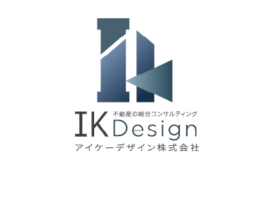

無料相談Vacant House
全国の空き家は約849万戸に達し、過去最多を更新し続けています。適切な管理がなされていない空き家は「特定空き家」に指定されるリスクがあり、指定を受けると固定資産税の住宅用地特例が解除され、税額が最大6倍に増額される可能性があります。
放置された空き家は、倒壊・火災・犯罪の温床となるだけでなく、近隣住民への迷惑や地域の資産価値低下にもつながります。早期の対策が、リスクの軽減と資産の有効活用の鍵となります。
不要な空き家は早期売却で管理コスト・固定資産税の負担を解消。市場価値を正確に査定し、最適な売却プランをご提案します。
リノベーションで賃貸物件として活用し収益化。立地や建物の状態に応じた最適な活用プランをご提案します。
建物の状態によっては解体して土地活用を検討。解体費用の見積もりから跡地の活用方法まで総合的にサポートします。
空き家の所在地・状態・権利関係を確認します。現地調査や登記情報の確認を通じて、物件の全体像を把握します。
売却・賃貸・解体等の選択肢を比較検討します。それぞれのメリット・デメリットを明確にし、最適な方針をご提案します。
必要に応じて建築士・司法書士等の専門家と連携します。権利関係の整理や建物診断など、各分野のプロが対応します。
選択した方針の実行と継続的な管理サポートを行います。売却・賃貸・解体いずれの場合も、完了まで一貫して伴走します。